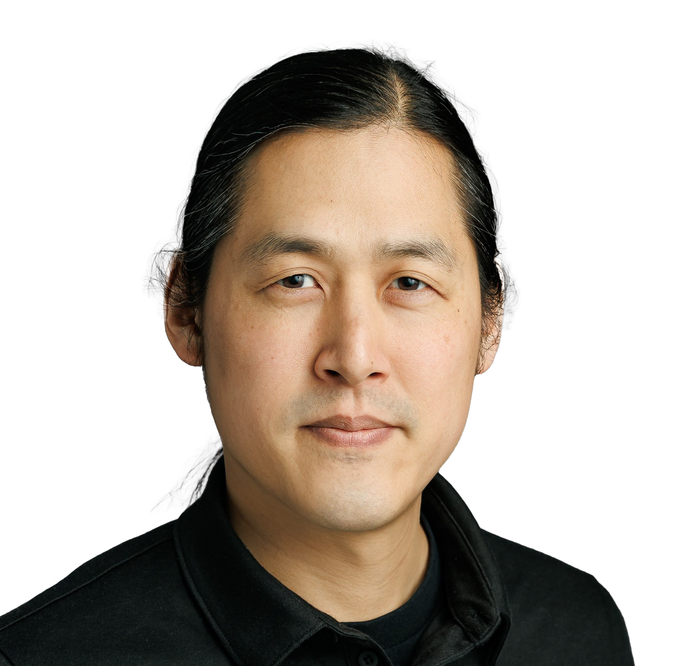

Thursday, October 9
Introduction & Frontiers
12:30pm - 1:45pm
Flourishing Considerations for AI
Luncheon Lecture
John L. Loeb and Frances Lehman Loeb Professor of Epidemiology, Harvard T.H. Chan School of Public Health; Director, Harvard Human Flourishing Program
⚠️ Attendance by special invitation only
2:00pm - 4:00pm
Harvard Campus & Museum Tours (Optional)
Tours start: Smith Campus Center, 1350 Massachusetts Ave.
Available Museums:
- Harvard Art Museums, 32 Quincy St.
- Harvard Museum of Natural History, 26 Oxford St.
7:15pm - 9:00pm
The Frontiers of AI
Fireside Chat
Chair: Prof. Jonathan Zittrain, Harvard Law School

Chief of Responsible AI (RAI), U.S. Department of Defense

Professor of Computer Science, Yale University

Research Lead, Plural Technology Collaboratory, Microsoft

Senior Research Scientist, Google DeepMind
Expected Topics:
- Current state of AI research and development
- Responsible AI implementation in government and industry
- Technical frontiers and future directions
- Intersection of faith and AI development
Friday, October 10
Core Theological & Practical Sessions
8:45am - 8:50am
Welcome
Jeremiah Smith, Jr., Professor of Law, Harvard Law School
8:50am - 9:50am
Are We Merely Machines
Keynote

Grover M. Hermann Professor of Health Sciences and Technology, MIT; Founder and Director, Affective Computing Research Group
Key Concepts to Watch For:
- Affective computing and emotion recognition
- Human-machine interaction and empathy
- Integration of faith and scientific inquiry
- Distinctively human vs. machine capabilities
10:05am - 12:05pm
Session I: Technos, Telos, and Theology
Panel
Chair: Prof. Ruth Okediji, Harvard Law School

Bishop of Oxford's Office, Church of England

Associate Professor of Early Modern History, Duke University

Alfred Landecker Professor, Oxford University

Provost Chair Professor, National University of Singapore
Focus: Law, Governance & Citizenship in the Algorithmic State
- Christian perspectives on algorithmic governance
- Religious freedom in AI-mediated societies
- Citizenship and human dignity in automated systems
- Historical precedents for technology and faith
12:30pm - 1:30pm
Hope in the Age of Generative AI
Luncheon Keynote

Managing Member, Karamaan Group
Expected Themes:
- Entrepreneurship and technology investing
- Generative AI's transformative potential
- Faith-informed approach to innovation
- Building hope amid technological disruption
1:50pm - 3:30pm
Session II: Education (and what it is for) in the Machine Age
Panel
Chair: Prof. Martin West, Harvard Graduate School of Education

Assistant Professor of Theology and Artificial Intelligence, Vrije Universiteit Amsterdam
Chief of Responsible AI (RAI), U.S. Department of Defense

Professor, ICAI School of Engineering, Universidad Pontificia Comillas
Focus: Learning, Formation & Wisdom
- Human vs. machine learning processes
- Christian pedagogy and AI integration
- Spiritual formation in digital environments
- Wisdom vs. information processing
3:45pm - 5:25pm
Session III: AI, Relationships and Relating
Panel
Chair: Rev'd. Dr. Lyndon Drake, University of Oxford

Associate Professor of Law, Singapore Management University

Research Associate, Harvard Human Flourishing Program

Associate Professor of Theology, Hillsdale College
Focus: Subversion, Surrogacy, Supercession
- AI companions vs. authentic relationships
- Algorithmic mediation of community
- Christian friendship and love in digital contexts
- Technology's impact on spiritual community
5:25pm - 5:45pm
Open Discussion
Saturday, October 11
Practical Applications in Church Life
9:00am - 11:15am
Session IV: Artificial Intelligence at Church
Panel
Chair: Mr. Andy Crouch, Praxis

Director, Faith & Society Center, University of Fribourg

Founder & CEO, FaithTech

Faculty of Theology and Religion, University of Oxford
⚠️ Requires separate registration
Focus: Altars, Pews, and Sacraments
- AI in worship and liturgy
- Technology in pastoral care
- Digital discipleship and formation
- Sacramental theology and virtual experiences
11:15am - 1:00pm
Lunch & Networking